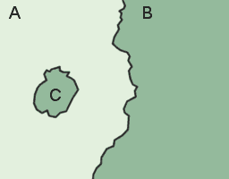
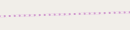
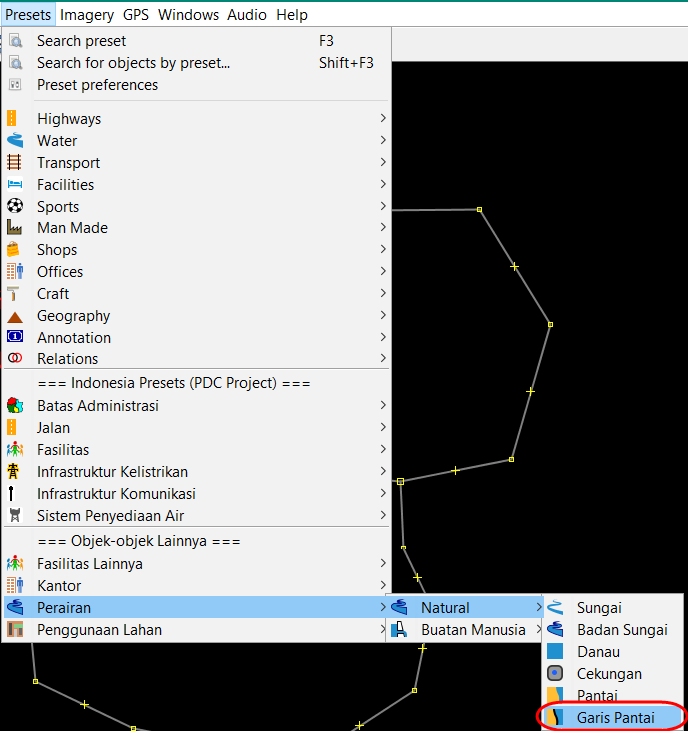
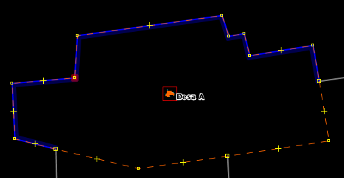
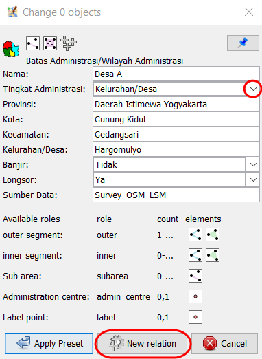
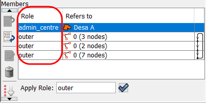
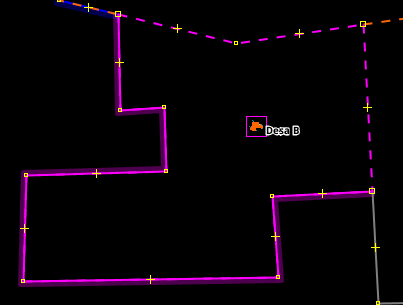

Creating the Administrative Boundaries in JOSM
Objectives:
- To be able to explain the definition and example of relation in OpenStreetMap
- To be able to explain administrative boundary concept in OpenStreetMap
- To be able to explain term and condition to create an administrative boundary in OpenStreetMap
- To be able to create the administrative boundaries in OpenStreetMap
The mapping of administrative boundaries in OpenStreetMap was suggested to an advanced mapper or experienced user with regularly mapping in OpenStreetMap. You can obtain the administrative boundary by government which have authorized with the boundary. In the PDC InAWARE project, we are associated with village offices and university in the cities. Therefore, we can obtain the administrative boundaries data from village offices, they drawing the boundaries in the paper maps.
The data source very important in administrative boundaries, you can not decide the boundary by yourself. If the data source is unclear and does not have an Open Data Commons Open Database License (ODbL), the data is not allowed to be uploaded into OSM. This can cause problems when other users download and use administrative boundary data freely for their benefit.
I. Relation in OSM
A relation is a group of elements. To be more exact it is one of the core data elements that consists of one or more tags and also an ordered list of one or more nodes, ways and/or relations as members which is used to define logical or geographic relationships between other elements. A member of a relation can optionally have a role that describes the part that a particular feature plays within a relation. The types of relation the administrative boundary :
a. Relation Tags
Relation tags to the administrative boundary in Indonesia
| Key | Value | Definition |
|---|---|---|
| admin_level | (1-11) Adjusted according to administrative boundaries | The admin_level key describes the administrative level of an object within a government hierarchy. A lower level means higher in the hierarchy. Besides others, this tag is used for the borders of territorial political entities (e.g. country, state, municipality) together with boundary=administrative. Due to cultural and political differences, admin levels of different countries only correspond approximately to each other. |
| boundary | administrative | An administrative boundary. Subdivisions of areas/territories/jurisdictions recognized by governments or other organizations for administrative purposes. |
| type | boundary | This tag to identify the object in administrative boundary |
| name | Name of administrative level | This tag to identify the name in administrative boundary, example: RW 03, Candisari Village |
| place | Example suburb, island | This optional tag, used to indicate that a particular location is known by a particular name, to indicate what sort of “place” it is. A place tag should exist for every significant human settlement (city, town, suburb, etc.) and also for notable unpopulated, named places. http://wiki.openstreetmap.org/wiki/Key:place |
| land_area | administrative | Tags to identify a land area boundary |
| is_in:province | Name of province | Tags to identify the name of the province. This tag must be included in lower-level administrative from (City/Town, Municipality, Village, Community group, Neighborhood Unit) |
| **(City)** is_in:city, **(Town)** is_in:town | Name of City/Town | Tags to identify the name of the city/town. This tag must be included in lower-level administrative from City/Town ( Municipality, Village, Community group, Neighborhood Unit) |
| is_in:municipality | Name of Municipality | Tags to identify the name of the municipality. This tag must be included in lower-level administrative from Municipality (Village, Community group, Neighborhood Unit) |
| is_in:village | Name of Village | Tags to identify the name of the village. This tag must be included in administrative from Village (Community group, Neighborhood Unit) |
| is_in:RW | Name of Community group | Tags to identify the name of the community group. This tag must be included in lower-level administrative from Community group (Neighborhood Unit) |
b. Relation Members
- Admin_centre
The point that represents the centre of administration in one area (a capital, county seat, etc.), usually a town, city or village (depending on the boundary level, see place=*).
-
Outer
The multiple ways that form the closed border
-
Inner
Enclaves of this border - the multiple ways that form the closed inner borders
Area C is inside Area A and Area C is identified as an inner of the relation members (https://wiki.openstreetmap.org/wiki/Main_Page)
II. Understanding Administrative Boundary in OSM
a. Definition of Administrative Boundary
An administrative boundary. Subdivisions of areas/territories/jurisdictions recognized by governments or other organizations for administrative purposes. These range from large groups of nation-states right down to small administrative districts and suburbs, as indicated by the ‘admin_level=*’ combo tag.

b. Admin_level values for specific countries
Admin_level=1 to 10 has been introduced in order that different borders can be rendered consistently among countries (doing this based on border_type would require knowledge of their hierarchy in each country). The lists of admin-level boundary for specific countries: http://wiki.openstreetmap.org/wiki/Tag:boundary%3Dadministrative or https://tinyurl.com/wiki-batasadm
c. Admin_level values for Indonesia
The division of administrative boundaries in Indonesia is adjusted to the division of regions and divisions in Indonesia which are managed by regional governments based on the principles of autonomy, deconcentration, decentralization and co-administration tasks. The types of administrative boundaries that exist in Indonesia are Provinces, City/Town, Municipality, Village, Hamlet (only rural area), Community group, Neighborhood Unit.
When the types of administrative boundaries in Indonesia are seen in OpenStreetMap, administrative boundaries have different values according to the level of administration. The levels of administration in Indonesia is as follows:
| value | Admin Level | Example Rendering | Place |
|---|---|---|---|
| 1 | - | - | - |
| 2 | Country | - | |
| 3 | - | - | - |
| 4 | Province |  |
Province |
| 5 | City/Town |  |
Big City=City, Small City=Town |
| 6 | Municipality |  |
Municipality |
| 7 | Village |  |
Village |
| 8 | Hamlet | Hamlet | |
| 9 | Community Group |  |
Community Group |
| 10 | Neighborhood Unit |  | Neighborhood Unit |
III. Terms and Condition When Create Administrative Boundary in OSM
a. Term and Condition to Mapper
As mentioned above, administrative boundaries are a sensitive topic to map. In order to avoid issues in the future, there are specific requirements when it comes to mapping administrative boundaries on OpenStreetMap, they are:
- The mapper has learned the concept relation data in OSM especially for the relation of administrative boundary
- The mapper has learned about how to create the administrative boundary and concern the data source
- The mapper can explain the admin level of the administrative boundary in Indonesia
b. Term and Condition to Data Source
Term and condition to the data source of the administrative boundary in OSM:
- Data must come from a reliable source, for example the Geospatial Information Agency (BIG)
- Data used must have a permission to use license, to ensure it is legal to be used for public use.
- Data must have clear administration boundaries, as legally acknowledged and approved by the concerned authorities.
IV. Adding the Administrative Boundary in OSM
In making administrative borders, it is highly encouraged to use editor Java OpenStreetMap (JOSM) due to the complete tools available to edit and modify are much easier to use than other editors such as iD editor.
Note : Data used in this tutorial are fictitious data to easily help understand and practice creating administrative borders.
Here are the steps in creating administrative boundaries on OpenStreetMap:
a. Drawing the Lines of Administrative Boundary
- Open JOSM editor.
- Then, select that you will make administrative boundaries in, by downloading the OSM data of the specified area.
- If the OSM data has mapped such as buildings and roads, you can use the filter data in JOSM in referring to chapter Using Filter in JOSM. The tool filter helps to hide the building and road in OSM data.
- Starting to digitize with Draw Node
- The image below is an example of digitizing administrative boundaries. We will create three villages that connected in the administrative boundary, there are Desa A (Village A), Desa B (Village B), and Desa C (Village C).

- When drawing administrative boundaries, please consider the following:
- Drawing lines connects with other lines in administrative boundary
- Ensure that do not overlap lines in administrative boundary and drawn twice
- Ensure that every interconnected line is drawn its own separate line (in a different segment). If the lines look something like this:
You can separate the lines use Tools → Split Way or use the shortcut (P) in your keyboard with choosing two-node between lines that separated like this:

b. Assigning Tags on Administrative Boundary Lines
- The next step is to assign a tag on each boundary line made Select one line in a segment from the administrative boundary.
- Then, we will tag the lines with administrative boundary presets with click on Presets Menu → Batas Administrasi → Garis Batas Administrasi. If these presets not showing in your Menu Presets, please refer to the chapter Using JOSM for adding the “PDC InAWARE Indonesia preset”. It is only in Bahasa.

- It will appear the dialog window that you can fill the name according to the name village between boundaries, such as Desa A / Desa B. This tag is intended to explain the line segments as administrative boundaries for Village A (Desa A) and Village B (Desa B). Then click on Apply preset to save the result.
- You can see the properties of the tag in line with select the lines using select tool and see the information on the right side, like the image below:

- In the next step, we will tag on the segments in line administrative boundary Desa A. Select the segment in line between Desa A and Desa C. Tagging in the same way as before.

- This part of the tutorial will show how to make village/district administrative boundaries where the village/district are covers the entire mainland/island. In the image below, the red line is the boundary between Village A and the ocean.

In this case, the tag given is different, where you need to add key=natural and value=coastline, then remove for tag key=note. To add the tagging, click on Menu Presets → Perairan → Natural → Garis Pantai.

- After the segments have tagged in Desa A. Let’s draw a node as administrative centre from Desa A.

- Add the presets for the object with Presets Menu → Batas Administrasi → Titik Pusat Administrasi. Fill the properties with the village name according to the admin level.

- The result should be like this:

c. Create Relations Administrative Boundary (example: Desa/Village)
- Next step we will create a relation to the administrative boundary in Desa A. Use the Select Tool to select all segments in lines and node in the area Desa A.

- Add presets for the relations with click on Presets Menu → Batas Administrasi → Wilayah Administrasi

- The preset window above should appear. Assign the administrative name (example: Village A), and on the boundary type column select Administrative, and on Administrative level column, select according to the level of administration (example: Village -. Level of Administration = 7). If you find the sign v in the row, please click on it and drop down the row. Click on New relation to create a new relation.

- A new relation window should appear:

- Check on the Role. After relation member Desa A is complete, we can determine the role of each member. The line segments Desa A have a role as “outer” or an outline from the administrative boundary. Also, add the role to node Desa A with “admin_centre”.

- Ensure the member list of the administrative boundary in order. If it is not ordered, it looks like here:

To organize the line segments, click the Sort the relation members icon

- After the line segments are in the correct order, the lines in the right hand side of the window should look like this:

- After assigning the role of each relation as well ensuring the list of administrative boundaries are in order, click OK.
- Check on the geometry relation in the data layer with a double-click on the area Desa A. The right relation will be shown in purple color.

- Please following step by step the same with before to create a relation of Desa B/Village B. If you are successful, the result like an image below:

- Add a new village in your relation boundary, we can named with Desa D/Village D. The village inside the area Desa C

- After assigning relation members of Village C, assign the roles of each relation members.
- Line segments of the outer layer of Village C (boundary lines between Village C/A, boundary lines between VIllage C/B, and boundary lines between Village C/Ocean) -> acts as the “outer” boundaries of the administrative area.
- Line segments of the inner layer of Village C (boundary lines between Village C/D) -> acts as the “inner” boundaries of the administrative area.
- Centre point of Village C -> assign as “admin_centre”

- Click on icon Sort the relation members, to ensure the list of relation members are in order
- Now Double-click in administrative boundary Desa C. If the relation has been made, the area of Desa C should appear purple color like below:

- After creating administrative boundaries for Village C, continue creating boundaries for Village D. Follow the same steps from Assigning Tags on Administrative Boundaries until Creating Relations of Administrative Boundaries. The end result should look like this:
d. Creating the relation of the administrative boundaries (example: Municipality)
- In this section, we will create a boundary in the up-level from the village. The step will be the same to create the relation of the village boundary.
- Let’s create a point of administrative centre in Kecamatan Kertamukti, and assign a tag: Click on Preset Menu → Batas Administrasi → Titik Batas Administrasi

- Select all segments in an administrative boundary to create a new relation.

- Add tagging with click on Presets Menu → Batas Administrasi → Wilayah Administrasi. Please fill the name of municipality, admin-level, and do not fill “Kecamatan”

- We will determine the role of relation members. All segments in Kertamukti municipality (Kecamatan Kertamukti) has a role as outer and the point of the municipality name has a role as admin_centre.

- Ensure the member list of the administrative boundary in order. If it is not ordered, it looks like here:
To create the segments in order, click on button Sort the relation members
- If the member list of the administrative boundary in order, it looks like here:
- Click OK.
- If you need to create the administrative boundary in up-level such as the city and province, you can do the same ways. The different way to add tags on relations and admin centre.
- The result will appear in www.openstreetmap.org
SUMMARY
You have learned about activities to create administrative boundaries with relation concepts in JOSM. A relation is a group of elements. To be more exact, it is one of the core data elements that consists of one or more tags and also an ordered list of one or more nodes, ways and/or relations as members which is used to define logical or geographic relationships between other elements. You can download the administrative boundary in polygons using the Export Tool.